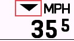
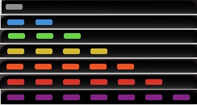

Introducción al Módulo¶
I Datos de Monitoreo en Tiempo Real¶
1. Potencia Actual¶
Muestra la potencia de ciclismo en tiempo real.
Colores
Este es un módulo que puede mostrar colores de fondo. Las secuencias de color se pueden elegir entre dos estilos en la aplicación ConnectIQ. Sin embargo, los usuarios no pueden personalizar los colores individuales o el rango de zonas.
- Estilo Garmin: Gris-Azul-Verde-Amarillo-Naranja-Rojo-Morado (Zona1~Zona7)
- Estilo Wahoo: Gris-Azul Oscuro-Azul Claro-Verde-Amarillo-Naranja-Rojo (Zona1~Zona7)
2. Velocidad Actual¶
Muestra la velocidad de ciclismo actual. La unidad será consistente con la configuración del usuario en Garmin Connect (km/h/mph).
Indicador de Velocidad Media¶
Esta es una configuración que se puede activar/desactivar para comparar la velocidad actual con la velocidad media dentro del módulo de velocidad actual. Se puede configurar en la aplicación ConnectIQ. Hay dos modos de visualización: "Flecha" y "Fondo".
- "Flecha"
- Arriba: Por encima de la velocidad media
- Abajo: Por debajo de la velocidad media
- No se muestra: Igual a la velocidad media o recorrido no iniciado
- "Fondo"
- Rojo: Por debajo de la velocidad media
- Verde: Por encima de la velocidad media
3. Frecuencia Cardíaca Actual¶
Muestra los datos de frecuencia cardíaca en tiempo real.
Colores
Este es un módulo que puede configurar colores de fondo. Las secuencias de color se pueden elegir entre dos estilos en la aplicación ConnectIQ. Sin embargo, los usuarios no pueden personalizar los colores individuales o el rango de zonas.
- Estilo Garmin: Gris-Gris-Azul-Verde-Amarillo-Rojo (<Zona1, Zona1~Zona5)
- Estilo Wahoo: Gris-Azul-Verde-Amarillo-Naranja-Rojo (<Zona1, Zona1~Zona5)
4. Cadencia actual¶
Muestra el valor de cadencia en tiempo real.
5. Altitud actual¶
Muestra la altitud actual. La unidad será consistente con la configuración del usuario en Garmin Connect (m/ft).
6. Pendiente actual*¶
Muestra la pendiente actual.
*Garmin no proporciona una interfaz de datos oficial, por lo que los datos calculados pueden tener imprecisiones o errores
Colores
Este es un módulo que puede mostrar colores de fondo. Los colores cambian según la pendiente correspondiente, pero los usuarios no pueden personalizar los colores ni el rango de pendiente.
| Ejemplo |  |
 |
 |
 |
 |
|
|---|---|---|---|---|---|---|
| Rango de pendiente | < 0.5% | 0.5%~3.99% | 4%~7.99% | 8%~11.99% | 12%~19.99% | > 20% |
II Datos promedio y acumulativos¶
7. Potencia promedio 3s*¶
Muestra la potencia promedio de los últimos 3 segundos. La visualización del color es la misma que la potencia en tiempo real.
*Garmin no proporciona una interfaz de datos oficial, por lo que los datos calculados pueden tener imprecisiones o errores
8. Potencia promedio 5s*¶
Muestra la potencia promedio de los últimos 5 segundos. La visualización del color es la misma que la potencia en tiempo real.
*Garmin no proporciona una interfaz de datos oficial, por lo que los datos calculados pueden tener imprecisiones o errores
9. Potencia Media 10s*¶
Muestra la potencia media de los últimos 10 segundos. La visualización del color es la misma que la potencia en tiempo real.
*Garmin no proporciona una interfaz de datos oficial, por lo que los datos calculados pueden tener imprecisiones o errores
10. Potencia Media de Vuelta*¶
Muestra la potencia media de la vuelta actual.
*Garmin no proporciona una interfaz de datos oficial, por lo que los datos calculados pueden tener imprecisiones o errores
11. Velocidad Media¶
Muestra la velocidad media de la actividad actual.
12. Tiempo de Actividad¶
Muestra la duración de la actividad actual.
13. Tiempo de Vuelta*¶
Muestra la duración de la vuelta actual.
*Garmin no proporciona una interfaz de datos oficial, por lo que los datos calculados pueden tener imprecisiones o errores
14. Distancia¶
Muestra la distancia recorrida acumulada para la actividad actual.
15. Calorías¶
Muestra las calorías quemadas en la actividad actual.
III Métricas de Entrenamiento¶
16. Relación Potencia-Peso Actual¶
Muestra la relación potencia-peso en tiempo real para la actividad actual en W/Kg. La potencia proviene de la configuración de la página de MyGahoo, y el peso de la configuración de la página de perfil personal de Garmin.
17. Relación Potencia-Peso Media 3s*¶
Muestra la relación potencia-peso media de los últimos 3 segundos en W/Kg.
*Garmin no proporciona una interfaz de datos oficial, por lo que los datos calculados pueden tener imprecisiones o errores
18. Relación Potencia-Peso Media 10s*¶
Muestra la relación potencia-peso media de los últimos 10 segundos en W/Kg.
*Garmin no proporciona una interfaz de datos oficial, por lo que los datos calculados pueden tener imprecisiones o errores
19. Relación Potencia-Peso Media de Vuelta*¶
Muestra la relación potencia-peso media de la vuelta actual en W/Kg.
*Garmin no proporciona una interfaz de datos oficial, por lo que los datos calculados pueden tener imprecisiones o errores
20. NP™ (Potencia Normalizada)*¶
Muestra la potencia normalizada para la actividad actual.
Riesgo de Pérdida de Datos
Si "vuelves a añadir" el campo MyGahoo durante la actividad, o entras en otros modos de conducción, los datos de este módulo se borrarán. (Sin embargo, la actividad grabada por Garmin no se verá afectada, solo MyGahoo comenzará a acumular estos datos desde cero de nuevo).
™Normalized Power (NP) y Training Stress Score (TSS) son marcas registradas de Peaksware, LLC.
*Garmin no proporciona una interfaz de datos oficial, por lo que los datos calculados pueden tener imprecisiones o errores
21. TSS™ (Training Stress Score)*¶
Muestra la puntuación de estrés de entrenamiento para la actividad actual.
Riesgo de pérdida de datos
Si "vuelves a agregar" el campo MyGahoo durante la actividad, o regresas al modo actual después de entrar en otros modos de conducción, los datos de este módulo se borrarán. (Sin embargo, la actividad grabada por Garmin en sí no se verá afectada, solo MyGahoo comenzará a acumular estos datos desde cero de nuevo).
™Normalized Power (NP) y Training Stress Score (TSS) son marcas registradas de Peaksware, LLC.
*Garmin oficial no proporciona interfaz de datos, por lo que los datos calculados pueden tener imprecisiones o errores
IV Información del Equipo¶
22. Piñón (Dientes)¶
Muestra el número de dientes del plato/piñón actual. Ej. 52/13
23. Piñón (Índice)¶
Muestra el número de índice actual del plato/piñón. Ej. 1/7
24. Relación de engranajes¶
Muestra la relación de transmisión actual del plato dividido por los dientes del piñón. Por ejemplo: 4.02
25. Gráfico de marchas¶
Muestra gráficamente la información de las marchas.
V Análisis de Datos¶
26. Balance Izquierda-Derecha en tiempo real¶
Muestra el balance de potencia izquierda-derecha actual. Se muestra como porcentaje sin el símbolo %, por ejemplo: 52-48
27. Balance Izquierda-Derecha promedio de 3s*¶
Muestra la relación de balance de potencia izquierda-derecha promedio durante 3 segundos.
*Garmin no proporciona una interfaz de datos oficial, por lo que los datos calculados pueden tener imprecisiones o errores
28. Histograma de Zonas de Potencia*¶
Muestra la distribución del tiempo en diferentes zonas de potencia.
Riesgo de Pérdida de Datos
Si "vuelve a agregar" el campo MyGahoo durante la actividad, o regresa al modo actual después de entrar en otros modos de ciclismo, los datos de este módulo se borrarán. (Sin embargo, la actividad registrada por Garmin en sí no se verá afectada, solo MyGahoo comenzará a acumular estos datos desde cero nuevamente).
*Garmin no proporciona una interfaz de datos oficial, por lo que los datos calculados pueden tener imprecisiones o errores
29. Histograma de Zonas de Frecuencia Cardíaca*¶
Muestra la distribución del tiempo en diferentes zonas de frecuencia cardíaca.
Riesgo de Pérdida de Datos
Si "vuelve a agregar" el campo MyGahoo durante la actividad, o regresa al modo actual después de entrar en otros modos de ciclismo, los datos de este módulo se borrarán. (Sin embargo, la actividad registrada por Garmin en sí no se verá afectada, solo MyGahoo comenzará a acumular estos datos desde cero nuevamente).
*Garmin no proporciona una interfaz de datos oficial, por lo que los datos calculados pueden tener imprecisiones o errores
VI Información Ambiental¶
30. Reloj¶
Muestra la hora actual.
31. Viento*¶
Muestra la velocidad del viento actual y la dirección del viento relativa/absoluta.
*Garmin no proporciona una interfaz de datos oficial, por lo que los datos calculados pueden tener imprecisiones o errores
Unidades de Velocidad del Viento¶
- m/s: metros por segundo
- KPH: kilómetros por hora
- MPH: millas por hora
- Escala Beaufort: escala de fuerza del viento, 0~12 niveles
Nivel de Velocidad del Viento¶
El nivel de velocidad del viento se indica mediante el número de flechas, con diferentes números correspondientes a la velocidad del viento como se muestra en la figura a continuación. Cuando la unidad de velocidad del viento seleccionada no sea m/s, el número de flechas se seguirá calculando en base a la velocidad del viento correcta en lugar del número mostrado.

Dirección del Viento Absoluta/Relativa¶
- Dirección Absoluta: Dirección del viento dada en el pronóstico del tiempo, independiente de la dirección de marcha.
- Dirección Relativa: El ángulo relativo entre la dirección de marcha actual y la dirección del viento. Por ejemplo, si se va hacia el oeste con una dirección de viento absoluta de norte a sur, la dirección del viento relativa es de derecha a izquierda.
Colores de la Dirección del Viento¶
Al mostrar la dirección del viento relativa, las flechas se colorean según el ángulo del viento. El rojo indica viento en contra (viento relativo de 45° delante a la izquierda a 45° delante a la derecha); el verde indica viento a favor (viento relativo de 45° detrás a la izquierda a 45° detrás a la derecha); el negro indica viento cruzado.

Configuración¶
El módulo de viento debe configurarse en la aplicación ConnectIQ para una visualización óptima. Consulte el módulo Configuración del Tiempo para obtener más detalles.
es
VII LED Virtual¶
Los LED virtuales se pueden configurar en los bordes de la pantalla. Los usuarios pueden usar los LED en diferentes posiciones para mostrar información diferente.

Potencia en tiempo real¶
Los LED virtuales muestran la cantidad y el color para cada zona (el estilo de color se establece en estilo Garmin en el ejemplo a continuación)

Potencia media de 3 segundos¶
Igual que el anterior.
Zonas de frecuencia cardíaca¶
Los LED virtuales muestran la cantidad y el color para cada zona (el estilo de color se establece en estilo Garmin en el ejemplo a continuación)

Indicador de velocidad media¶
Los LED virtuales muestran la relación entre la velocidad actual y la velocidad media, siendo rojo si se va por detrás (menos que la media) y azul si se va por delante (más que la media).

Cada LED representa un 10% de ventaja o desventaja, como se muestra en la tabla a continuación. La tabla utiliza la ventaja como ejemplo; la desventaja sigue el mismo principio.
| Ejemplo | Significado |
|---|---|
 |
Igual a la velocidad media |
 |
Ventaja actual < 10% |
 |
10% < Ventaja actual < 20% |
 |
Ventaja actual > 20% |
Indicador de potencia media¶
Los LED virtuales muestran la relación entre la potencia actual y la potencia media, con los colores teniendo el mismo significado que antes, pero cada LED representa un 20% de ventaja o desventaja. La tabla utiliza la ventaja como ejemplo; la desventaja sigue el mismo principio. ```
| Ejemplo | Significado |
|---|---|
|
Igual a la potencia promedio |
|
Liderazgo de corriente < 20% |
|
20% < Liderazgo de corriente < 40% |
|
Liderazgo de corriente > 40% |
Indicador de Equilibrio Izquierda-Derecha¶
Los LEDs virtuales muestran el equilibrio izquierda-derecha de la potencia de pedaleo actual. Cada LED representa un desfase del 5% para un lado. La tabla utiliza el pedaleo desplazado hacia la derecha como ejemplo; lo opuesto sigue el mismo principio.
Además, si los valores de equilibrio izquierda-derecha recibidos son 100-0 o 0-100, se mostrará un estado de error. Esta situación suele ocurrir debido a la desconexión de un lado del medidor de potencia de doble cara o a una fuerza momentánea durante el primer pedaleo.
| Ejemplo | I - D |
|---|---|
 |
50% - 50% |
 |
45~50% - 50~55% (sin incluir el 55%) |
 |
40~45% - 55~60% (sin incluir el 60%) |
 |
≤40% - ≥60% |
 |
0%-100% (o 100%-0%) |
Indicador de Equilibrio Izquierda-Derecha 3s¶
Igual que el anterior.